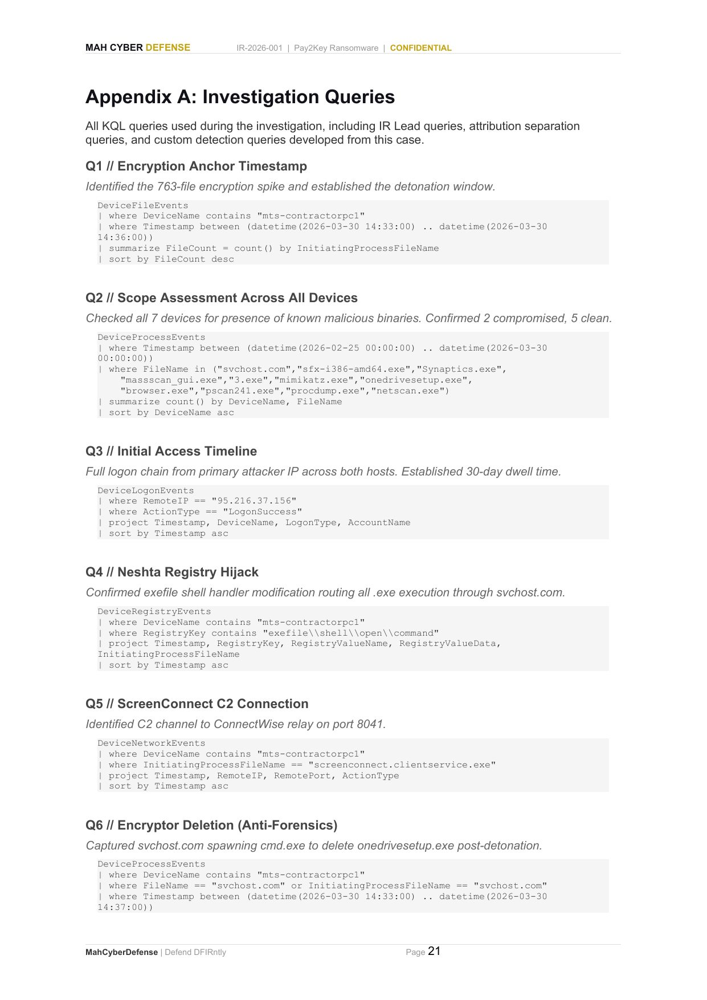
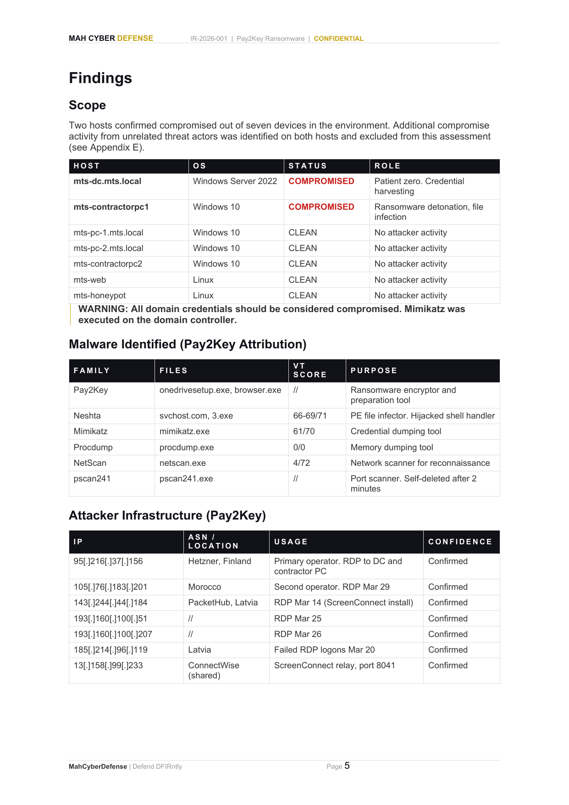
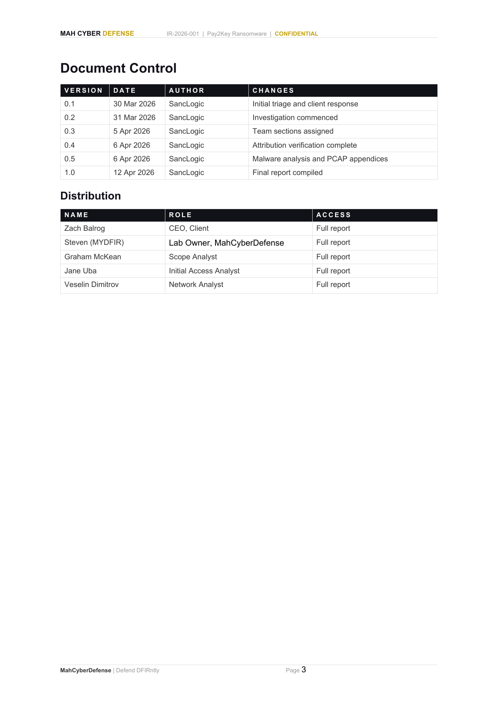
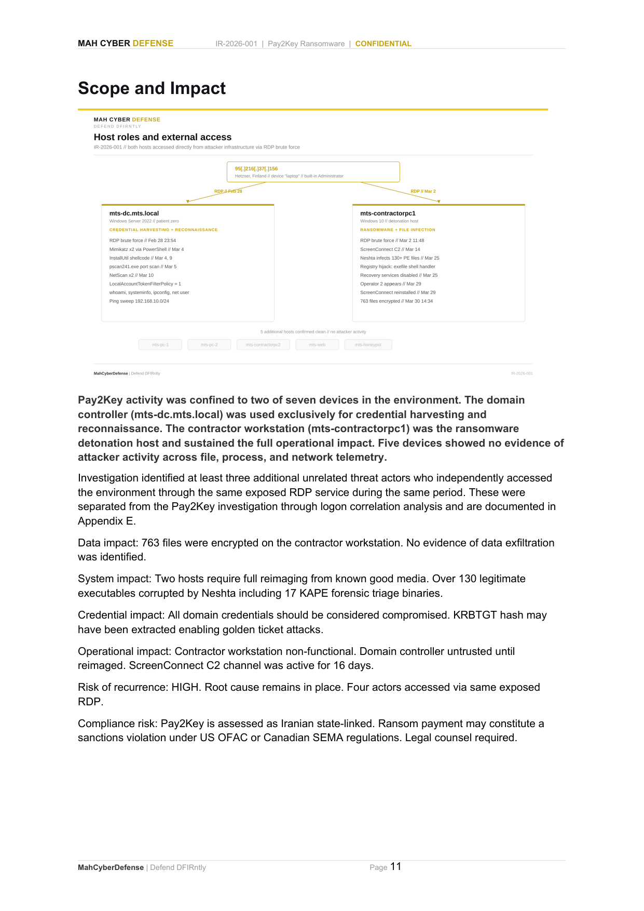
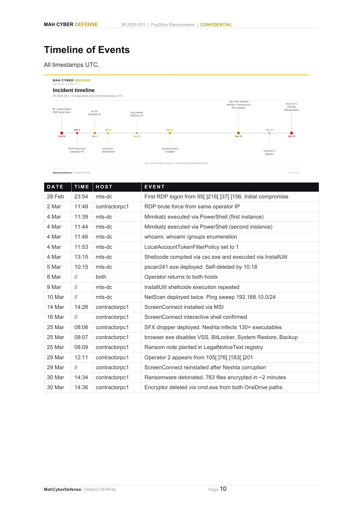
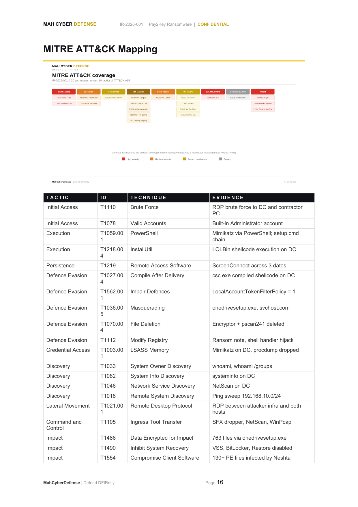

Project context
This was a structured SOC/DFIR training exercise based on a real-world Pay2Key ransomware scenario and a historical endpoint-telemetry dataset. The 30-day period describes the attacker's dwell time in the evidence, not a live incident left unattended by the training team. Working retrospectively allowed the team to reconstruct the complete attack and produce a professional incident-response report.
My focus: determine the true extent of compromise, validate affected and unaffected devices, and flag activity that did not fit the primary Pay2Key hypothesis.
My investigation method
Process evidence
Queried known malicious binaries across all devices and compared execution by host.
Coverage validation
Confirmed MDE onboarding before treating negative results as meaningful.
Network correlation
Filtered benign infrastructure noise and reviewed suspicious external communications.
Attribution discipline
Correlated artefacts with logon windows instead of assigning every event to Pay2Key.
Primary scope query
DeviceProcessEvents
| where Timestamp between (datetime(2026-02-25 00:00:00) .. datetime(2026-03-30 00:00:00))
| where FileName in ("svchost.com","sfx-i386-amd64.exe","Synaptics.exe",
"massscan_gui.exe","3.exe","mimikatz.exe","onedrivesetup.exe",
"browser.exe","pscan241.exe","procdump.exe","netscan.exe")
| summarize EventCount=count() by DeviceName, FileName
| sort by DeviceName asc
My findings and impact
Defensible host classification
Supported confirmation that the domain controller and contractor workstation were compromised while five other devices showed no evidence of activity.
Unexpected artefacts
Flagged Synaptics.exe and massscan_gui.exe while reviewing results rather than limiting analysis to expected indicators.
Improved attribution
The escalation helped separate DarkKomet activity from Pay2Key and reduced the risk of a misleading single-actor conclusion.

Queries connected to my workstream
Evidence from the final report




Challenges and lessons learned
Challenge
A no-hit result is not proof of a clean host without verified telemetry coverage and appropriate time bounds.
Challenge
Multiple concurrent actors meant suspicious activity had to be correlated with logon and network evidence before attribution.
Lesson
Unexpected query output can be more important than the artefacts originally expected.
Lesson
Strong analysis must be translated into a concise, reproducible explanation that another analyst can validate.
Interview-ready summary
As Scope Assessment Analyst, I assessed seven devices using Microsoft Defender XDR and KQL, correlating process, file, network and logon evidence. I supported confirmation of two compromised hosts and five hosts with no evidence of attacker activity. I also identified unexpected Synaptics.exe and massscan_gui.exe artefacts, which led to separate DarkKomet attribution and helped prevent an inaccurate single-actor conclusion.